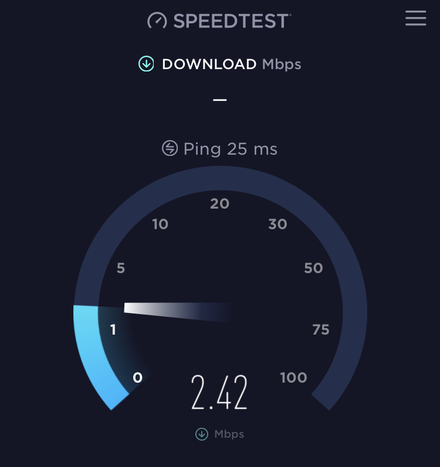

Hey
Wir nutzen seit 2017 den Huawei Router B525s-23a. Anfangs war er sehr gut, keine Probleme, 30-40mb/s aber jetzt seit 2-3 Wochen ist er sehr langsam. Tagsüber 15-20mb/s, Abends schon unter 5mb/s. Könnte uns jemand vielleicht helfen? 
Hallo @yooooo6-1
Ist der Upload höher als der Download, dann ist es wohl wie so oft leider die hohe Auslastung der Mobilfunkzelle. Kommt in letzter Zeit immer wieder vor. Hoffentlich wird es nach dem Lockdown wieder etwas besser.
vor 5 Minuten schrieb Rexalius2000:Hallo @yooooo6-1
Ist der Upload höher als der Download, dann ist es wohl wie so oft leider die hohe Auslastung der Mobilfunkzelle. Kommt in letzter Zeit immer wieder vor. Hoffentlich wird es nach dem Lockdown wieder etwas besser.
Ja das stimmt wohl habe den Upload getestet der liegt bei mir 15mb/s
Typisches Anzeichen einer hohen Auslastung. Wenn es nicht besser wird (Kundenzuwachs) eventuell überlegen auf DSL oder wenn vorhanden auf Kabel Internet wechseln. Beides wird auch von Magenta angeboten.
vor 3 Minuten schrieb Rexalius2000:Typisches Anzeichen einer hohen Auslastung. Wenn es nicht besser wird (Kundenzuwachs) eventuell überlegen auf DSL oder wenn vorhanden auf Kabel Internet wechseln. Beides wird auch von Magenta angeboten.
Danke für die Hilfe.
Gerne, solltest du noch Fragen zu DSL oder Kabelinternet von Magenta haben melde dich einfach nochmals.
Ja weiß leider nicht so genau was DSL ist.
Wäre sehr nett falls du helfen könntest.
vor 9 Minuten schrieb Rexalius2000:Gerne, solltest du noch Fragen zu DSL oder Kabelinternet von Magenta haben melde dich einfach nochmals.
Ja weiß leider nicht so genau was DSL ist.
Wäre sehr nett falls du helfen könntest.
DSL(Digital Subscriber Line) ist kurz gesagt eine Internetanbindung über die Telefonleitung mit einer fix vor eingestellten Bandbreite. Diese hat den Vorteil, dass es zu keinen großen Geschwindigkeitsschwankungen wie bei Internet über Mobilfunk so wie du es derzeit kennst kommt. Egal wie viel User gleichzeitig gerade im Internet unterwegs sind, du wirst nicht viel davon merken. Internet über Mobilfunk ist ein geteiltes Medium was heißt, dass du dir die maximale Bandbreite einer Mobilfunkstadion mit anderen Kunden teilst. Um so mehr gleichzeitig online sind um so schlimmer kann es dann sein. Besonders jetzt zum Lockdown oder auch zur Primetime.
Wenn du jetzt schon wissen möchtest ob DSL oder Kabel Internet von Magenta bei dir verfügbar ist, kannst du das hier überprüfen.
@yooooo6-1
Und hast du dich für einen Kabeltarif entschieden oder ist die Situation bei dir wieder besser geworden?
{kind=link}